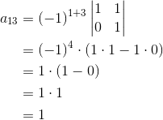

Exerciții și probleme rezolvate pentru profilul științele naturii
1. Această problemă a fost dată în sesiunea specială a anului 2015, pentru profilul științele naturii, la subiectul II, exercițiul 1.
Bacalaureat Matematică 2015 | Științele naturii | Sesiunea specială | Subiectul II
Se consideră matricele  și
și  , unde
, unde  este număr real.
este număr real.
a. Arătați că  .
.
b. Rezolvați în mulțimea numerelor reale ecuația  , unde
, unde  .
.
c. Determinați numărul real pentru care  .
.
Rezolvare:
a. Calculăm  .
.
 .
.
b. Avem .

c. , 


.
2. Această problemă a fost dată în sesiunea august-septembrie a anului 2014, pentru profilul științele naturii, la subiectul II, exercițiul 1.
Bacalaureat Matematică 2014 | Științele naturii| Sesiunea august-septembrie | Subiectul II
Se consideră matricele  și
și  .
.
a. Calculați  .
.
b. Arătați că  .
.
c. Determinați numerele reale  pentru care
pentru care  .
.
Rezolvare:
a. Calculăm .

b. Calculăm  și
și  .
.
![\begin{align*} AB&=\begin{pmatrix} 0& 1& 0\\ 1& 0 & 1\\ 0& 1 & 0 \end{pmatrix}\cdot \begin{pmatrix} 0& 0& 1\\ 0& 1 & 0\\ 1& 0 & 0 \end{pmatrix}\\\\ &=\begin{pmatrix} 0\cdot 0+0\cdot 1+1\cdot 0& 0\cdot 1+0\cdot0+1\cdot 1& 0\cdot 0+0\cdot 1+1\cdot 0\\ 0\cdot 0+1\cdot 1+0\cdot 0& 0\cdot 1+1\cdot 0+0\cdot 1 & 0\cdot 0+1\cdot 1+0\cdot 0\\ 1\cdot 0+0\cdot 1+0\cdot 0& 1\cdot 1+0\cdot 0+0\cdot 1 & 1\cdot 0+0\cdot 1+0\cdot 0 \end{pmatrix}\\\\ &=\begin{pmatrix} 0& 1& 0\\ 1& 0 & 1\\ 0& 1 & 0 \end{pmatrix} \end{align*}](../../media/webbooks/283/1821/images/equations/xkoews5qh3hllucqb0hdnw==.gif)
![\begin{align*} BA&=\begin{pmatrix} 0& 0& 1\\ 0& 1 & 0\\ 1& 0 & 0 \end{pmatrix}\cdot \begin{pmatrix} 0& 1& 0\\ 1& 0 & 1\\ 0& 1 & 0 \end{pmatrix}\\\\ &=\begin{pmatrix} 0\cdot 0+0\cdot 1+1\cdot 0& 0\cdot 1+0\cdot0+1\cdot 1& 0\cdot 0+0\cdot 1+1\cdot 0\\ 0\cdot 0+1\cdot 1+0\cdot 0& 0\cdot 1+1\cdot 0+0\cdot 1 & 0\cdot 0+1\cdot 1+0\cdot 0\\ 1\cdot 0+0\cdot 1+0\cdot 0& 1\cdot 1+0\cdot 0+0\cdot 1 & 1\cdot 0+0\cdot 1+0\cdot 0 \end{pmatrix}\\\\ &=\begin{pmatrix} 0& 1& 0\\ 1& 0 & 1\\ 0& 1 & 0 \end{pmatrix} \end{align*}](../../media/webbooks/283/1821/images/equations/fccue8o6ljzkkvg6ypxzvw==.gif)

c. Avem ,  .
.

3. Această problemă a fost dată în anul 2014, la modelul de subiect, pentru profilul științele naturii, la subiectul II, exercițiul 1.
Bacalaureat Matematică 2014 | Științele naturii | Model de subiect | Subiectul II
Se consideră matricele  și
și 
a. Arătați că 
b. Verificați dacă 
c. Determinați numărul matricelor  pentru care
pentru care  , unde
, unde  și
și  sunt numere reale.
sunt numere reale.
Rezolvare:
a. Calculăm  și
și  și le comparăm.
și le comparăm.

b. Calculăm  , iar apoi îi calculăm determinantul.
, iar apoi îi calculăm determinantul.
Calculăm  și
și 

c. Calculăm 
Aflăm și din egalitatea 
 sunt patru matrice
sunt patru matrice  care verifică cerințele.
care verifică cerințele.
4. Această problemă a fost dată în sesiunea august-septembrie a anului 2013, pentru profilul științele naturii, la subiectul II, exercițiul 1.
Bacalaureat Matematică 2013 | Științele naturii | Sesiunea august-septembrie | Subiectul II
Pentru fiecare număr real  se consideră matricea
se consideră matricea 
a. Arătați  .
.
b. Determinați numărul real pentru care  .
.
c. Determinați inversa matricei  .
.
Rezolvare:
a. Calculăm 
 .
.
b. Calculăm  .
.
Dar
c. Verificăm dacă matricea  este inversabilă, calculându-i determinantul:
este inversabilă, calculându-i determinantul:
 -inversabilă.
-inversabilă.
Determinăm transpusa matricei :

Construim matricea adjunctă astfel:




Determinăm inversa matricei cu următoarea formulă:
Inversa matricei este matricea: 
Mai multe probleme poți găsi la Subiectul II, exercițiul 1 în următoarele eBook-uri: